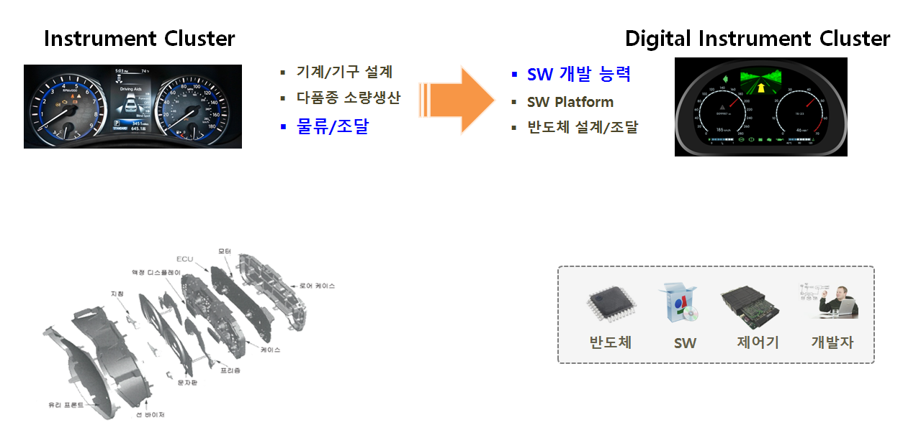
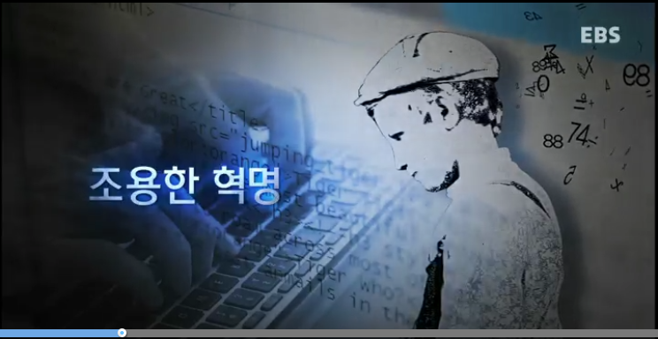
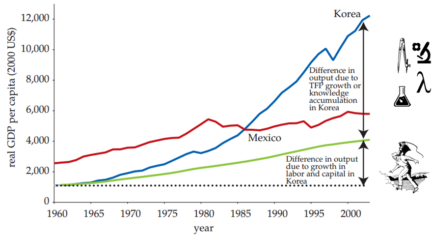
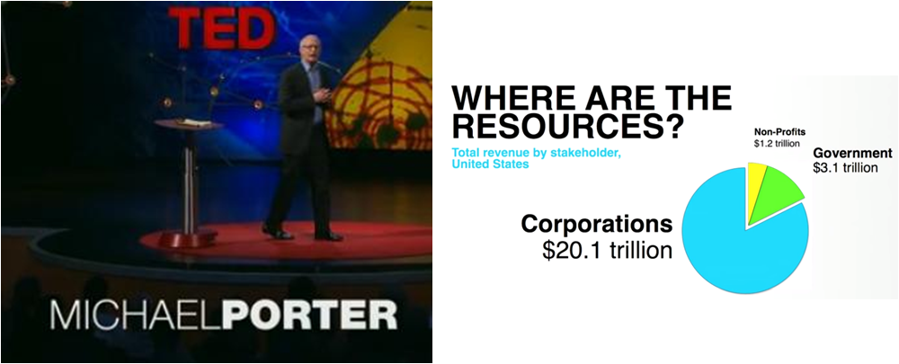
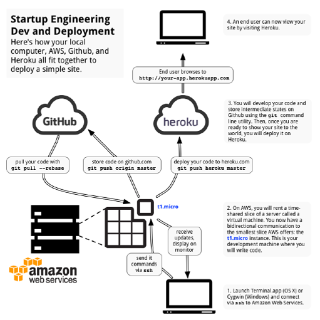
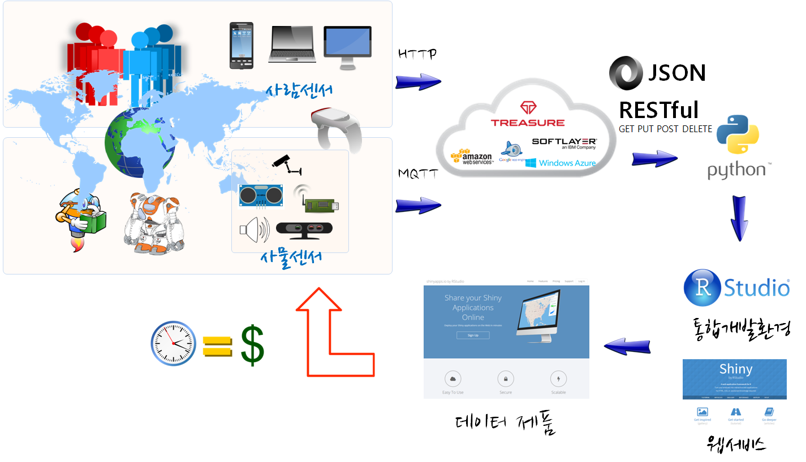

기계학습(인공지능) 엔터프레너쉽
2016년 10월

xwMOOC 엔터프레너쉽
| 문제 정의 정보격차 (Digital Divide) |
⇒ | 컴퓨팅 사고력 (Computational Thinking, CT) |
문제 상세 정의
- 우리나라 과학기술이 선진국 수준이 아니다.
- 상당량의 가치(Value)는 과학기술에서 나온다.
- 과학공학자 및 일반 영리 및 비영리 단체가 소프트웨어를 얼마나 잘 하고있는지 측정하기는 어렵다.
- 하지만, 주변을 둘어봐도 마이크로소프트, 한글, 인터넷 검색을 잘하면 잘한다고 한다.
xwMOOC 해법
- 한국인을 위한 컴퓨팅 사고력 교육 서비스를 제공
- 전국민이 컴퓨터 공학, 통계학, 전자공학 학사가 필요
| 초등(K6) | ⇒ | 컴퓨터 과학 언플러그드 |
| 리보그와 러플 | ⇒ | 리보그와 러플 |
| 파이썬 | ⇒ | 정보교육을 위한 파이썬 |
| 소프트웨어 공학 | ⇒ | 소프트웨어 카펜트리 |
추진 결과(예상)
- 전국민 생산성 10-20% 평균적으로 향상
- 생산성 10배 이상 향상된 사례발굴
- 작업을 더 빠르게 처리하여 저녁이 있는 삶
- 새로운 문제를 해결에 매진
- HPC, 클라우드, 빅데이터에 대한 준비 ...
자동차 혁명(?)
1. 사고체계

조용한 혁명
 EBS 동영상2. 과학기술 컴퓨팅(Scientific Computing)
GDP 성장에 지식(Knowledge) 기여분  출처: 세계은행(2010), Korea as a Knowledge Economy -Evolutionary Process and Lessons Learned (2006)3. 스타트업의 역할
사회 문제의 해결책으로 스타트업  출처:Micheal Porter, “Why business can be good at solving social problems”, Ted, Jun 2013 TED Talk스타트업 공학
영남대학교 IoT 창업 워크샵
 영남대학교 워크샵('15년 12월)기승전 컴퓨터 제조업
인공지능(기계학습) xwMOOC
| 컴퓨터가 눈을 갖다 | ⇒ | 삼엽충의 전성기를 다시 |
| 인간이 보는 데이터 | ⇒ | 데이터 과학 |
| 새로 정의하는 수학 | ⇒ | 기호수학(SymPy) |
| ⇒ | $100 오픈 슈퍼컴퓨터 | |
| 기계학습 |
⇒ | 통계전공자가 바라본 기계학습 |
| ⇒ | 제20대 총선의 기억 |
/